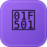
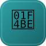
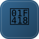
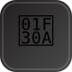
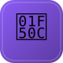

Core
SheetyStack 💾 Autosaving
The spreadsheet-native platform: installs and drives the whole stack from one CLI.
Analog of: Rancher / OpenShift

Sheeternetes 🏛️ Load-Bearing
Spreadsheet-native container orchestration. The flagship: scheduling, self-healing, rolling updates — all from a Google Sheet.
Analog of: Kubernetes
Sheetlium 💾 Autosaving
Service discovery, DNS, and load balancing over a shared network. Being extracted into its own component.
Analog of: Cilium

Sheetlux CD 💾 Autosaving
GitOps delivery: sync a directory of manifests into the cluster's desired state.
Analog of: Argo CD
Emerging
Sheetheus 📝 Unsaved Draft
Metrics and a tiny TSDB for the cluster.
Analog of: Prometheus
Sheetfana 📝 Unsaved Draft
Dashboards, incl. a beautiful UI inside Google Sheets.
Analog of: Grafana

Sheetstor 📝 Unsaved Draft
Distributed, replicated block storage; volume metadata lives in a Volumes tab.
Analog of: LINSTOR

SheetHub 📝 Unsaved Draft
An all-in-one DevOps forge — repos, issues, merge requests, releases, and CI — in one workbook.
Analog of: GitLab

SheetOS 📝 Unsaved Draft
A minimal, API-only, declarative node OS whose single job is to bootstrap and run Sheeternetes — distributable across many sheets.
Analog of: Talos Linux
Data & Storage

Sheetgres 📝 Unsaved Draft
Relational database — tabs as tables, SQL via QUERY().
Analog of: PostgreSQL

Sheetka 📝 Unsaved Draft
Streaming — an append-only tab is a log broker.
Analog of: Kafka

SheetWire 📝 Unsaved Draft
Wire-protocol gateway — psql/redis-cli/mongosh connect to a Sheet.
Analog of: DB wire protocols